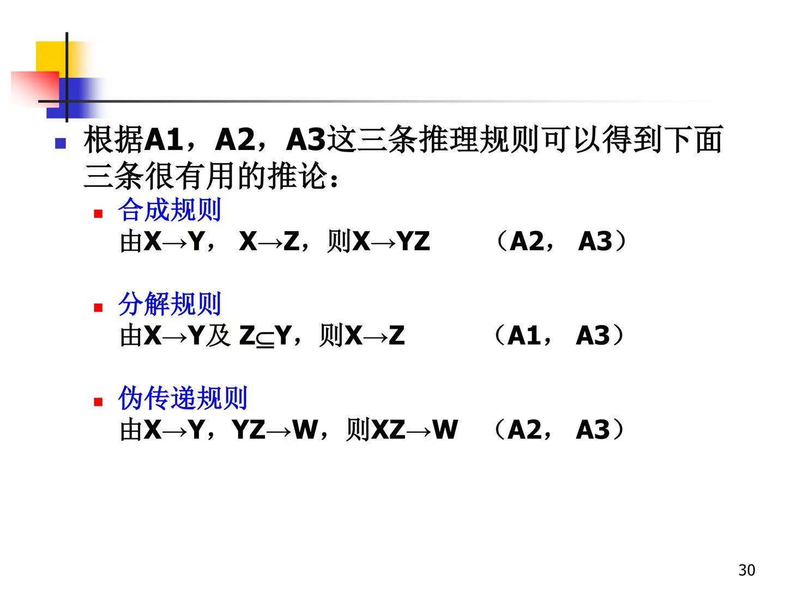

四、数据库设计
1.关系数据理论
1.1 了解关系模型的存储异常
·存储异常包括：数据冗余、插入异常、删除异常、更新异常
·数据间存在着一定的依赖关系，如果一个关系模式没有很好地反应这些关系，出现存储异常，就不是一个好的设计
1.2 函数依赖和多值依赖
·定义：设关系模式R(U), X, Y包含于U，r是R(U)上的任一关系。对任意元组t1, t2∈r，如果t1、t2在X上的属性值相等，在Y上的属性值也相等，则称X函数决定Y，或Y函数依赖于X，记为FD X→Y - 称X为决定因素或函数依赖的左部，Y为函数依赖的右部
实例：BORROW关系的函数依赖： - CARDNO→NAME：每个借书证号可以唯一确定一个读者 - CARDNO→DEPT：每个借书证号可以唯一确定读者所在单位 - CARDNO→MN：每个借书证号可以唯一确定读者所在单位的负责人 - DEPT→MN：单位可以唯一确定负责人 - (CARDNO,BNO)→DATE：借阅日期由借书证号和图书编号共同决定
只能根据现实世界中数据间的语义确定函数依赖
1.3 理解平凡和非平凡FD、完全和部分FD、传递FD的概念
·平凡FD：Y包含于X；非平凡FD：Y不包含于X
·完全FD：对于任意的X的子集X', X'→Y都不成立；部分FD：存在X的真子集X'，使得X'→Y成立
·传递FD：如果X→Y，Y→X不成立，Y→Z，则X→Z；直接FD：如果X→Y，Y→X，Y→Z，则X→Z
1.4 理解键、主属性、非主属性概念
·关系模式R，A是R中的属性，F是R上的函数依赖集，如果A包含在R的某个候选键中，称A为主属性，否则称A为非主属性。
1.5 关系模式的规范化
第一范式1NF：关系模式R的每一个属性对应的域值都是不可再分的 - 数据库中的关系至少应该是1NF的
第二范式2NF：如果A包含在R的某个候选键中，称A为主属性，否则称A为非主属性。如果R∈1NF，且所有非主属性都完全依赖于R的每一个候选键，则R∈2NF - 一定程度上减轻存储异常，但你不能完全消除
第三范式3NF：R∈1NF，若在R中没有非主属性传递依赖于R的候选键，则R∈3NF。 - 一个2NF的关系模式不一定属于3NF，一个关系模式若是3NF的，则一定属于2NF。 - 若R∈3NF，R的每一个非主属性既不部分函数依赖于候选键，也不传递函数依赖于候选键 - 没有考虑主属性间的函数依赖问题
BCNF范式：R∈1NF，而且R中没有任何属性传递依赖于R中的任一关键字，则R∈BCNF
不但排除了非主属性对主属性的传递依赖，也排除了主属性间的传递依赖
- 例：2元3NF一定是BCNF，因为不可能存在传递依赖
·一个更直观的等价的BCNF定义：R∈1NF，F是R上的函数依赖集，对于F中的每一个函数依赖X→Y，必有X是R的一个超键（候选键），则R∈BCNF
如果R∈3NF且R只有一个候选键，则R∈BCNF
1.6 判断一个关系模式属于几范式、将关系模式规范化到3NF
模式分解法（合成法）生成3NF
| 步骤 | 实例 |
|---|---|
1.7 数据依赖三条公理、三条推理规则
函数依赖的逻辑蕴涵：研究“对于给定的一组函数依赖，判断另外一些函数依赖是否成立”的问题
逻辑蕴涵：如果关系模式R满足FD X→Y，则称F逻辑蕴涵FD X→Y，或称X→Y逻辑蕴涵于F，记为F|=X→Y
F的闭包：所有背F逻辑蕴含的函数依赖称为F的闭包，记为F+
候选键的严格形式化定义：关系模式R(U, F)，如果 - X→U∈F+ - 不存在X'包含于X且X'→U∈F+成立 则称X为模式R的一个候选键
Armstrong公理 | 3条公理 | 3个推论 | | --- | --- | | |  | | 增广率表明，在一个函数依赖的左部增加R的属性，所得函数依赖依然成立 | 根据合成规则和分解规则，X→A1A2···Ak的充分必要条件是X→A1，X→A2，···，X→Ak |
1.8 FD闭包、属性闭包，求属性闭包
属性闭包：R(U, F)，所有用公理推出的函数依赖X→Ai中Ai的属性集合称为属性集X关于函数依赖集F的闭包，记为XF+
例：R(A, B, D, E, H), F={A→D, AB→DE, E→H} - 若X=A，(A)F+=AD - 若X=AB，(AB)F+=ABDEH
·属性闭包的作用：将判定X→Y是否能由F根据Armstrong公理导出的问题，转化为求出XF+，判定Y是否为XF+的子集的问题
·属性闭包算法：
| 算法 | 实例 |
|---|---|
最小函数依赖集：F满足 - F中的所有函数依赖其右部都是单属性 - 对F中的任一函数依赖X→A，F-{X→A}与F不等价 - 对F中的任一函数依赖X→A，F-{X→A}∪{Z→A}与F不等价，其中Z是X的真子集 -即右部都是单属性、没有多余的函数依赖、左部没有多余属性
最小函数依赖集算法
| 算法 | 实例 |
| --- | --- |
| |  |
|
1.9 模式分解的两个特性及简单判断
·不损失原有信息（无损连接）、保持数据间原有的函数依赖关系
·判断方法： | 理论 | | | --- | --- | | | |
| 实例 | ||
|---|---|---|
2.数据库设计方法步骤
2.1 数据库设计的基本步骤（六个阶段
） 需求分析、概念设计、逻辑设计、物理设计、数据库实施、数据库运行和维护
2.2 不同阶段任务、要求和设计内容
2.3 需求分析阶段，数据流图、数据字典
数据字典是关于数据库中数据的描述（元数据），不是数据本身
2.4 概念结构设计
概念模型独立于具体的数据模型（层次、网状、关系），与DBMS无关
2.5 自底向上设计方法
·试图集成需要解决的问题：属性冲突、命名冲突、结构冲突
步骤： 1.合并分E-R图，生成初步E-R图 2通过修改与重构，消除不必要的冗余
2.6 数据库逻辑设计，E-R模型向关系模型的转换
| 转换原则 | 实例1 | 实例2 |
|---|---|---|
2.7 数据库物理设计
·存储结构与存取方法
2.8 数据库重组织与重构造
·重组织：按原设计要求重新安排存储位置、回收垃圾、减少指针链等，以提高系统性能，不改变原设计的逻辑结构和物理结构
·重构造：根据新环境调整数据库的模式和内模式，程度是有限的，若应用变化太大应重新设计新的数据库